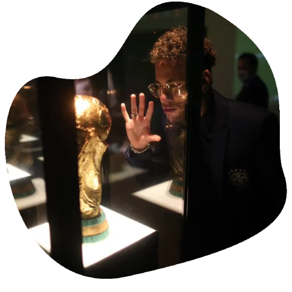
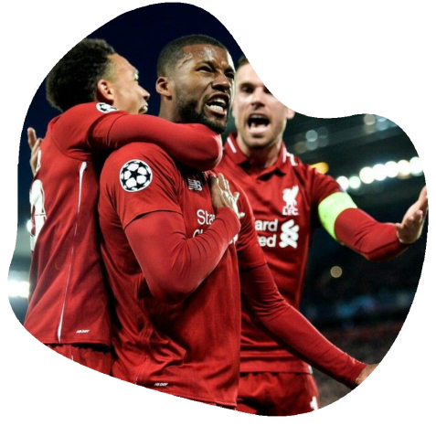
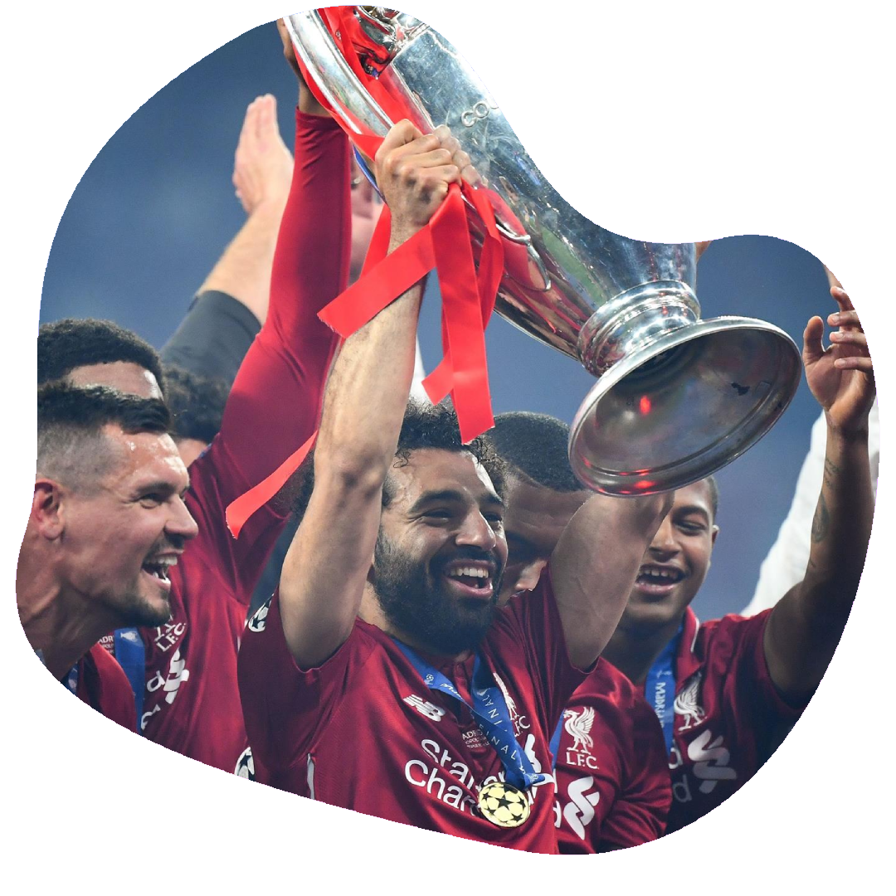
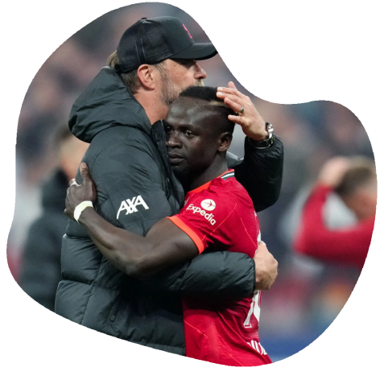

Minha história
E aí, Red! Meu nome é Mário, tenho 20 anos e moro na região de Itaquera. Estou cursando ciência da computação com ênfase em ciência de dados na Faculdade São Paulo Tech School. Sou torcedor do Liverpool e venho compartilhar dos sentimentos que sinto pelo clube com você. Vou contar isso por partes:

Quando comecei a torcer para o Liverpool?
Antes de 2019 eu não acompanhava quase nada sobre futebol. Os únicos eventos que eu assistia eram as Copas do Mundo, pois é praticamente uma tradição do país: parar e assistir a Copa do Mundo. Por mais que eu assistisse, eu não entendia nada do que estava acontecendo ali. Eu não sabia quais jogadores eu poderia de fato considerar bons ou ruins, não sabia quais eram os melhores times e tampouco as regras. O que me ajudou a ter um panorama um pouco melhor sobre futebol, foi a Copa do Mundo de 2018, na Rússia, pois consegui acompanhar do início ao fim e aos poucos ir me familiarizando com alguns conceitos do esporte ⚽.Então...
No ano de 2019, eu recebi a oportunidade de assistir ao jogo do Liverpool pelas oitavas de finais da UEFA Champions League, onde o Liverpool enfrentava o Bayern de Munique. Ao assistir a vitória do time inglês sobre o time alemão, fiquei mais interessado em acompanhar a campanha do time naquela edição de UEFA Champions League, pois percebi valores que me agradavam: superação no momento difícil, inteligência emocional e uma atmosfera de jogo e torcida muito calorosa 🧠🔥♥.

Incrivelmente marcante
Nas quartas de final daquela edição do campeonato, O Liverpool enfrentou o Barcelona, com o primeiro confronto sendo na casa do Barcelona. Este primeiro confronto ficou marcado por 3 a 0 a favor do Barcelona, o que deixava o time inglês em grande desvantagem para recuperar o placar. Além deste fator, o time contou com lesões de jogadores importantes: Mohamed Salah, Naby Keita e Roberto Firmino. No segundo confronto, eu acreditava muito na retomada dos ingleses sobre os espanhóis, mesmo que parecesse praticamente impossível para a maioria. E foi naquele momento que pude testemunhar um dos jogos mais emblemáticos e marcantes do clube, onde contou com heróis improváveis e o memorável lance do 4 a 0 vindo do pé de Trent Alexander-Arnold ♥💥.Não teve preço
Ver o time entregando o máximo de si, ver a comemoração, ver a torcida vibrando e cantando o hino You’ll Never Walk Alone (Você Nunca Andará Sozinho) foram fatores que me cativaram e me aproximaram ainda mais do time, pois foi o momento em que ainda eu não tinha a paixão pelo clube, e assistir aquele jogo me fez sentir como parte daquele momento, como parte da torcida e do clube ♥👣.

